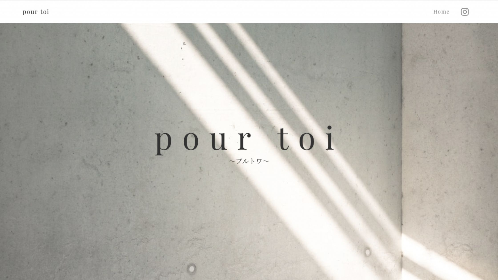
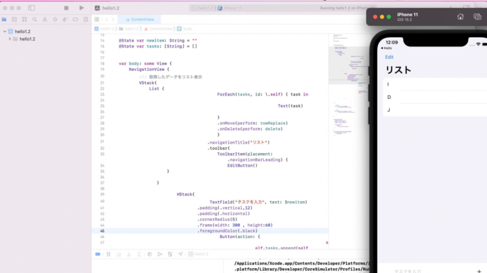

01 ウェブサイト
友人が経営する脱毛サロンのホームページをStudioで作成しました。
ヘッダーやメニューをできるだけシンプルにしながらも美しい印象にしました。お店の情報やイメージをヒアリングして作成することで、短期間で作成することができました。
02 Todo アプリ
SwiftUIで作成しました。
リストの追加・並び替え・削除等の基本的な機能が使えます。
→Github
友人が経営する脱毛サロンのホームページをStudioで作成しました。
ヘッダーやメニューをできるだけシンプルにしながらも美しい印象にしました。お店の情報やイメージをヒアリングして作成することで、短期間で作成することができました。
SwiftUIで作成しました。
リストの追加・並び替え・削除等の基本的な機能が使えます。
→Github